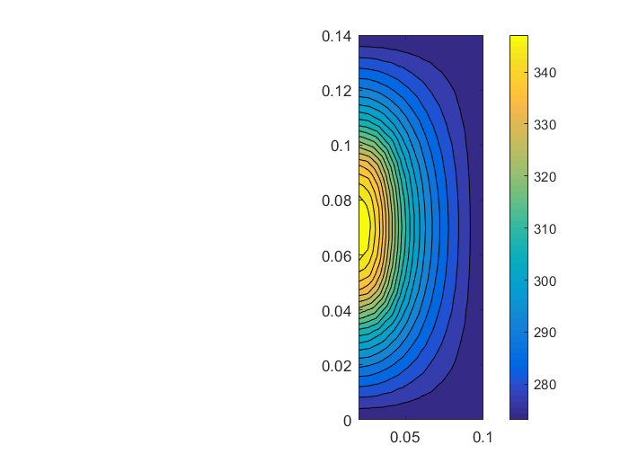

close all;
clear all;
[Coor,VtxElement,VtxEntity,EdgElement,EdgEntity,TriElement,TriEntity] = readcomsol('mesh_source.mphtxt');
[fileID] = fopen('mesh_source.mpmetis.epart.4');
ePartTable = fscanf(fileID,'%d\n');
ePartTable = ePartTable+1;
[fileID] = fopen('mesh_source.mpmetis.npart.4');
nPartTable = fscanf(fileID,'%d\n');
nPartTable = nPartTable+1;
Y0 = 1;
e = 0.1;
Temp = 273.15;
PartAmount = max(nPartTable);
for m = 1:PartAmount
PartTriElementNum{m} = find(ePartTable==m);
PartNodeNum{m} = find(nPartTable==m);
end
EleNodeTable = nPartTable(TriElement);
k = 1;
for i = 1:length(ePartTable)
for j = 1:3
if EleNodeTable(i,j) ~= ePartTable(i)
JunNodeNum(k,1) = TriElement(i,j);
k = k+1;
end
end
end
JunNodeNum = unique(JunNodeNum);
JunNodeTable = zeros(length(JunNodeNum),PartAmount);
for i = 1:length(ePartTable)
for j = 1:3
if EleNodeTable(i,j) ~= ePartTable(i)
JunNodeTable(JunNodeNum==TriElement(i,j),EleNodeTable(i,j)) = ...
bitor(JunNodeTable(JunNodeNum==TriElement(i,j),EleNodeTable(i,j)),1);
JunNodeTable(JunNodeNum==TriElement(i,j),ePartTable(i)) = ...
bitor(JunNodeTable(JunNodeNum==TriElement(i,j),ePartTable(i)),1);
end
end
end
for m = 1:PartAmount
PartJunNodeNumGlobal{m} = JunNodeNum(JunNodeTable(:,m)==1);
PartNodeNum{m} = unique([PartNodeNum{m};PartJunNodeNumGlobal{m}]);
for i = 1:length(PartJunNodeNumGlobal{m})
PartJunNodeNum{m}(i) = find(PartNodeNum{m}==PartJunNodeNumGlobal{m}(i));
end
end
for m = 1:PartAmount
PartTriElement{m} = TriElement(PartTriElementNum{m},:);
for j = 1:3
for i = 1:length(PartTriElement{m})
PartTriElement{m}(i,j) = find(PartNodeNum{m} == PartTriElement{m}(i,j));
end
end
end
for m = 1:PartAmount
PartCoor{m} = Coor(PartNodeNum{m},:);
end
R = Coor(:,1);
Z = Coor(:,2);
TriR = R(TriElement);
TriZ = Z(TriElement);
p(:,1) = TriR(:,2).*TriZ(:,3) - TriZ(:,2).*TriR(:,3);
p(:,2) = TriR(:,3).*TriZ(:,1) - TriZ(:,3).*TriR(:,1);
p(:,3) = TriR(:,1).*TriZ(:,2) - TriZ(:,1).*TriR(:,2);
q(:,1) = TriZ(:,2) - TriZ(:,3);
q(:,2) = TriZ(:,3) - TriZ(:,1);
q(:,3) = TriZ(:,1) - TriZ(:,2);
r(:,1) = TriR(:,3) - TriR(:,2);
r(:,2) = TriR(:,1) - TriR(:,3);
r(:,3) = TriR(:,2) - TriR(:,1);
Area = (q(:,1).*r(:,2) - q(:,2).*r(:,1))/2;
TriRadius = (TriR(:,1)+TriR(:,2)+TriR(:,3))./3;
for m = 1:PartAmount
PartR{m} = R(PartNodeNum{m});
PartZ{m} = Z(PartNodeNum{m});
PartTriR{m} = TriR(PartTriElementNum{m},:);
Partp{m} = p(PartTriElementNum{m},:);
Partq{m} = q(PartTriElementNum{m},:);
Partr{m} = r(PartTriElementNum{m},:);
PartArea{m} = Area(PartTriElementNum{m});
PartTriRadius{m} = TriRadius(PartTriElementNum{m});
end
Cond = 52;
SourceElement = find(TriEntity==2);
SourceTable = ePartTable(SourceElement);
for m = 1:PartAmount
PartSource{m} = zeros(length(PartTriElementNum{m}),1);
PartSourceElementNum{m} = SourceElement(SourceTable==m);
for j = 1:length(PartSourceElementNum{m})
PartSourceElementNum{m}(j) = find(PartTriElementNum{m} == PartSourceElementNum{m}(j));
end
PartSource{m}(PartSourceElementNum{m}) = 10000000;
end
for m = 1:PartAmount
PartS{m} = zeros(length(PartNodeNum{m}));
PartF{m} = zeros(length(PartNodeNum{m}),1);
for k = 1:length(PartTriElementNum{m})
for i = 1:3
for j = 1:3
Se = (pi*Cond*PartTriRadius{m}(k)*(Partr{m}(k,i)*Partr{m}(k,j) + Partq{m}(k,i)*Partq{m}(k,j)))/(2*PartArea{m}(k));
PartS{m}(PartTriElement{m}(k,i),PartTriElement{m}(k,j)) = PartS{m}(PartTriElement{m}(k,i),PartTriElement{m}(k,j)) + Se;
end
Fe = pi*PartSource{m}(k)*PartArea{m}(k)*(PartR{m}(PartTriElement{m}(k,i))+3*PartTriRadius{m}(k))/6;
PartF{m}(PartTriElement{m}(k,i)) = PartF{m}(PartTriElement{m}(k,i)) + Fe;
end
end
end
for m = 1:PartAmount
PartBoundary{m} = find(PartZ{m}==0 | PartZ{m}==0.14 | PartR{m}==0.1);
PartFreeNodes{m} = find(~(PartZ{m}==0 | PartZ{m}==0.14 | PartR{m}==0.1));
end
for m = 1:PartAmount
PartY{m} = zeros(length(PartS{m}));
PartI{m} = zeros(length(PartF{m}),1);
PartVa{m} = zeros(length(PartJunNodeNum{m}),1);
PartVc{m} = zeros(length(PartJunNodeNum{m}),1);
PartVi{m} = zeros(length(PartJunNodeNum{m}),1);
PartVr{m} = zeros(length(PartJunNodeNum{m}),1);
PartV0{m} = zeros(length(PartNodeNum{m}),1);
PartV1{m} = ones(length(PartNodeNum{m}),1);
for i = 1:length(PartJunNodeNum{m})
PartY{m}(PartJunNodeNum{m}(i),PartJunNodeNum{m}(i)) = Y0;
end
PartSi{m} = PartS{m}+PartY{m};
end
n=0;
while (norm(PartV1{1}-PartV0{1})>e)|(norm(PartV1{2}-PartV0{2})>e)|...
(norm(PartV1{3}-PartV0{3})>e)|(norm(PartV1{4}-PartV0{4})>e)
PartV0 = PartV1;
for m = 1:PartAmount
PartI{m}(PartJunNodeNum{m}) = 2*PartVi{m}*Y0;
PartFi{m} = PartF{m}+PartI{m};
PartV1{m} = zeros(length(PartNodeNum{m}),1);
PartV1{m}(PartBoundary{m}) = Temp;
PartFi{m}(PartFreeNodes{m}) = PartFi{m}(PartFreeNodes{m})-PartSi{m}(PartFreeNodes{m},:)*PartV1{m};
PartV1{m}(PartFreeNodes{m}) = PartSi{m}(PartFreeNodes{m},PartFreeNodes{m})\PartFi{m}(PartFreeNodes{m});
PartVa{m} = PartV1{m}(PartJunNodeNum{m});
PartVr{m} = PartVa{m} - PartVi{m};
end
Vc = zeros(length(JunNodeNum),1);
for i = 1:length(JunNodeNum)
j = 0;
for m = 1:PartAmount
if JunNodeTable(i,m) == 1
Vc(i) = Vc(i)+2*PartVr{m}(PartJunNodeNumGlobal{m}==JunNodeNum(i));
j = j+1;
end
end
Vc(i) = Vc(i)/j;
end
for m = 1:PartAmount
for i = 1:length(PartJunNodeNumGlobal{m})
PartVc{m}(i) = Vc(JunNodeNum==PartJunNodeNumGlobal{m}(i));
end
PartVi{m} = PartVc{m} - PartVr{m};
end
n = n+1;
end
V = zeros(length(Coor),1);
for m = 1:PartAmount
for i = 1:length(PartNodeNum{m})
V(PartNodeNum{m}(i)) = PartV1{m}(i);
end
end
Interp1 = scatteredInterpolant(R,Z,V);
tx = 0.02:1e-3:0.1;
ty = 0:1e-3:0.14;
[qx,qy] = meshgrid(tx,ty);
qz = Interp1(qx,qy);
subplot(1,2,2);
contourf(qx,qy,qz,20);colorbar;
